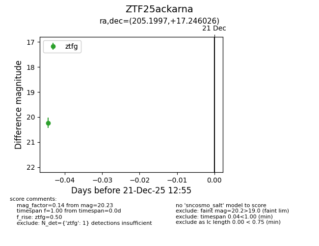
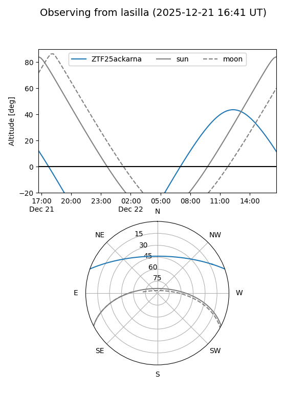
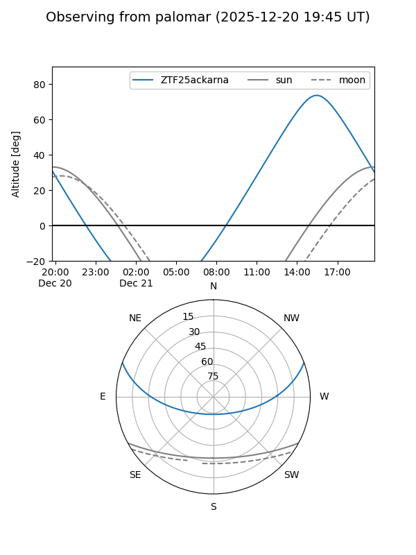

ZTF25ackarna
Target ZTF25ackarna at 2025-12-21 12:57
Aliases and brokers:
FINK: fink-portal.org/ZTF25ackarna
Lasair: lasair-ztf.lsst.ac.uk/objects/ZTF25ackarna
ALeRCE: alerce.online/object/ZTF25ackarna
alt names
ZTF25ackarna (ztf,fink_ztf)
Coordinates:
equatorial (ra, dec) = 205.1997,+17.24603
equatorial (HMS+DMS) = 13:40:47.94,+17:14:45.69
galactic (l, b) = (354.5685,+74.91141)
Flags:
Photometry:
last ztfg=20.23
1 ztfg detections
Lightcurve

Visibility


Additional plots